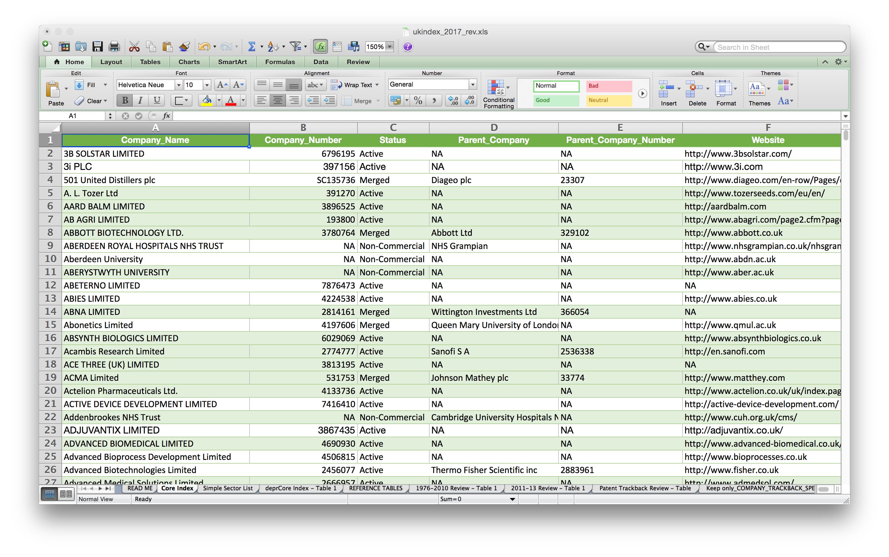

UK Company Index for Access and Benefit-Sharing
Paul Oldham
The UK Company Index for ABS
Paul Oldham
Simon Industrial Fellow
Manchester Institute for Innovation Research
Alliance Manchester Business School
Background
The Question: How to independently identify companies and organisations utilising genetic resources & associated traditional knowledge in the UK?
Our Solution: Build an index of companies/organisations who have filed a patent application that:
- contains a reference to genetic material (a species name), and;
- contains a UK applicant or inventor.
We could do this because we had already indexed 14 million patent documents (1975-2013) for species names as reported earlier in a PLOS ONE article.
Why Patent Data?
- Patent applications are an indicator of investments in Research and Development and reflect willingness to pay for protection of investments;
- Patent data is accessible (e.g. EPO World Patent Statistical Database - PATSTAT, used by OECD, EUROSTAT and others as the gold standard);
- Patent data is empirically verifiable (that is we do not need to rely on what people say they do and can focus on what they actually do);
- Patent data provides a route to statistical indicators.
UK Patent Trends for Genetic Resources

Issues with patent data
- Working with patent data at the level of millions of records requires programming and text mining skills;
- Companies may refer to a species either because it is utilized or because it is a target for an invention (e.g. to deal with a pathogen or pest);
- There is a lag time of at least 2 years between submission of an application and its publication (data is historic);
- Mapping patent applicant names into other data sources (company registers etc.) is hard and very messy… but improving with the use of unique identifiers in PATSTAT.
- But… patent data is the best data there is!
Methods
We extracted the patent applicant names from the patent documents and performed a lookup using a combination of:
- UK Companies House data;
- Open Corporates and similar services;
- Manual and automated web searching.
Our aim was to obtain registration numbers, postal addresses, telephone numbers, email addresses for the entities so that they could be contacted by DEFRA and/or the UK regulator.
All data was cross-checked but proved to be very messy to work with.
Outcomes
- A main table excel sheet and supplementary tables (a boring table);
- A simple online map;
- 600 (of 1525) companies and organisations emailed for the UK consultation on ratification;
- An early stage interactive online App (that allows companies to be looked up).
Results = A boring table

Data Issues
We had aimed to automate the entire process but the data was very MESSY and required extensive cross-checking by a combined team of 5 people:
- Names are messy (really messy);
- Companies merge, demerge, cease to operate…(partly identifiable in company registers);
- Companies/organizations may have multiple legal personalities;
- Standard Industrial Classification (SIC) codes used by UK Companies House and for national statistics proved useless as a means for exploring data (e.g. pharmaceutical companies headquarters are typically listed as 70100 - Activities of head offices not as pharmaceuticals).
Sector Issues
Identifying sectors proved time consuming because the SIC data was so poor. We adopted an approach of:
- Manually reviewing websites to identify what entities said they did;
- Identifying single phrases for major sectors (e.g. Agriculture, Pharmaceuticals etc.);
- Editing for noise (false positives) from our species name matching algorithm using a patent traceback table;
- A need to link sector categories to wider statistical categories (perhaps at a later stage using a concordance table - following OECD approaches);
Main Issues
- Engagement with stakeholders (who are they?);
- Those who comply with the regulation (Declaration of Due Diligence, national requirements);
- Those who fail to comply (progressively encouraging to enter into compliance);
Thoughts on Strategy
- Start with easier approaches and progressively address more difficult areas;
- In our view:
- start with patent activity to capture R & D investments;
- develop methodologies for areas that are harder to capture (e.g. products) over time;
- An iterative step by step approach recognises that everything cannot be done now… but can be done over time;
- The diversity of EU languages and data sources is a significant issue. In general, the best approach at EU level (using the Horizon 2020 model) is a consortium of organisations across member states.
Patent Data
- Applications originating from countries and persons in the EU are accessible through PATSTAT (the World Patent Statistical Database) which EUROSTAT was involved in establishing;
- Text mining required to update species data after 2013;
- It is possible to elaborate statistical trends in patent activity for the EU and break down by member state (We developed an EU indicator for the EEA in 2009 but the indicator was later discontinued for unknown reasons).
Company Organisation Data
- Look at what OECD has already done on harmonising patent and company register data. Focuses on OECD member states and available in PATSTAT.
- Very human resource intensive to tidy the data;
- EU languages and name forms will require a concentrated effort (maybe led by research organisations in a member state as part of a consortium?);
- Once an index is established a need for maintenance and update;
- Approach should meet the practical needs of focal points/regulators (important to clarify what they are from a focal point/regulator perspective);
- Approach should facilitate MS reporting under the NP.
National Data Sources
- Company Registration Databases
- Research Councils/ Funding Organisations
- Other?
- A key issue when working on the EU level will be the diversity of languages and the diversity of languages used within data sources. For that reason national approaches linked to EU level cooperation (probably for shared data needs and harder methodological problems) is likely to be necessary. The Framework programme (Horizon 2020) consortium approach is well established and can work very well.
Other EU data sources (indicative)
Lessons Learned from the UK project
A much more difficult task than it appeared to be!!!
- Information gathering can be automated but information processing requires human resources and is time consuming;
- Maintaining or updating an index will be labour intensive but could be done once a year;
- A patent approach will not capture sectors that do not pursue patents (trade secrecy or illicit trading) - address at later stage;
- Make sure approach addresses actual needs of focal points/regulators;
- Indexing makes R & D for GRs visible and is a tool for engagement with companies and others.